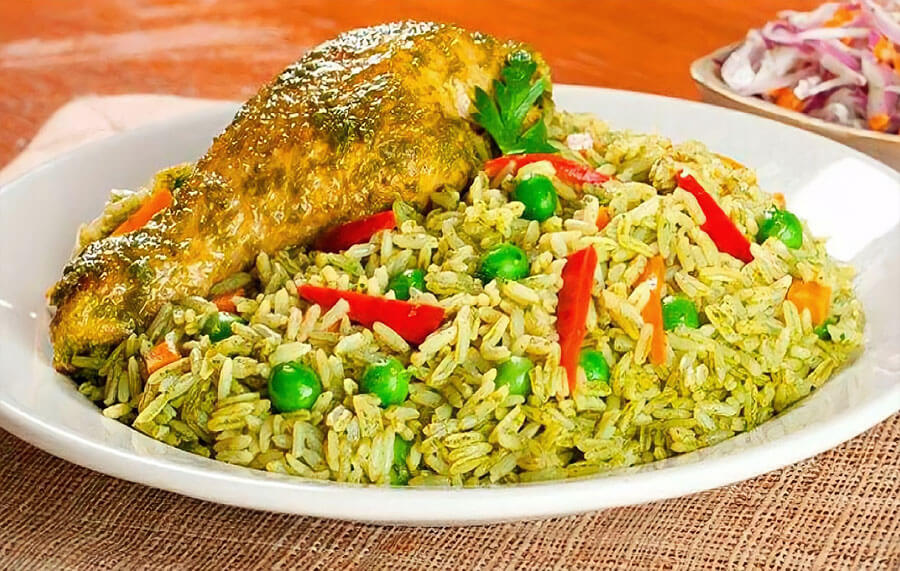

Recetas de Odin

Acerca del Arroz con pollo
El arroz con pollo es un plato típico de América Latina y España con variaciones regionales según el país. Consiste en arroz cocinado con pollo, en presas o desmechado, verduras y sazonado con especias.
A continuacion le brindamos una lista de ingredientes y los pasos a seguir para preparar este delicioso plato.
Ingredientes:
- 4 Piernas de Pollo
- 2 Tazas de Arroz Blanco
- 3 Tazas de Agua
- 3 Cebollas Rojas
- 1 Tomate
- 1 Zanahoria
- 1/2 Taza de Arverjas
- 1/2 Taza de Choclo Desgranado
- 1 Taza de Culantro Deshojado
- 1 Pizca de Sal
- 2 Limones
- 1 Cucharadita de Ajo Molido
- 4 Cucharadas de Aceite Vegetal
- 4 Cucharadas de Ají Amarillo Molido
Preparacion:
- Licuar el culantro con un poco de agua si fuese necesario hasta obtener una pasta. Reservar.
- Cortar una cebolla y la zanahoria en cubos pequeños.
- En una olla, calentar el aceite y sellar el pollo hasta dorarlo por completo. Retirar y reservar. En la misma olla, freir la cebolla durante 5 minutos, con ello se lográ aprovechar el sabor dejado por el pollo.
- Agregar el ajo, el ají amarillo, un cubo MAGGI® Sabor Gallina y freír por 5 minutos más. Incorporar el culantro licuado y cocinar durante 2 minutos más. Regresar las presas a la olla junto con 3 tazas de agua y cocinar durante 15 minutos a fuego medio.
- Retirar las presas. Agregar el arroz previamente lavado, las arverjas, la zanahoria, el choclo y cocinar a temperatura media durante 10 minutos.
- Agregar las presas de pollo cocidas. Terminar de cocinar durante 5 minutos más a temperatura mínima.